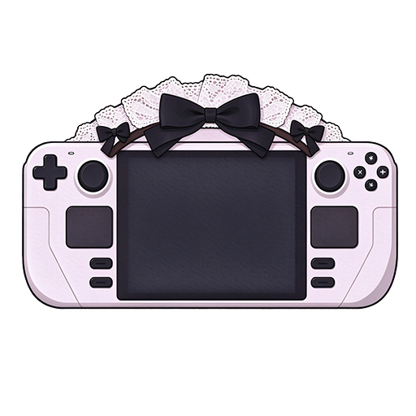

输入访问令牌即可连接这台 Steam Deck
填写服务商的接口地址与 Key，保存后立即生效。
决定她怎么称呼你、用什么语气说话。改完保存立即生效，新会话也保持一致。
记在这里的内容每次对话都会带上，重启也还在。对话里说「记住…」她也会自己记一条； 纠正她的做法（「不对，应该…」）同样会记下来。只记你真想让她长期记住的，写多了会占掉上下文。
人设和下面的记忆就是「她这个人」的全部，导出一个 JSON 就能换机器、重装后恢复。
她的权限范围、工作目录，以及其他设备连上这台 Deck 的方式。
版本信息与升级渠道。升级会保留配置、会话与长期记忆。